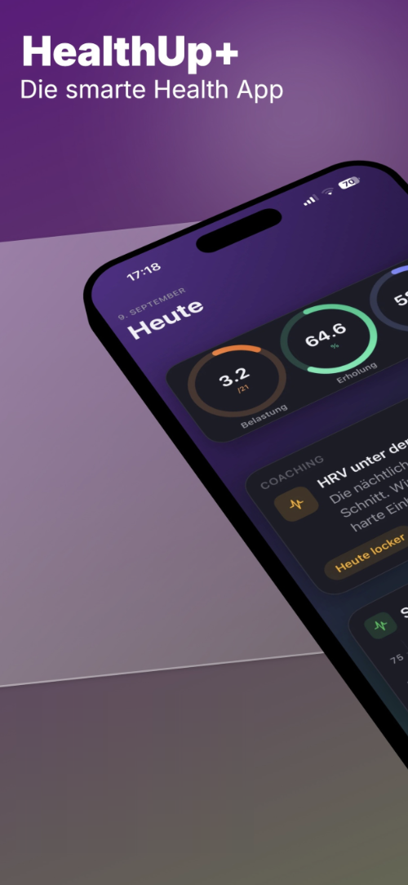
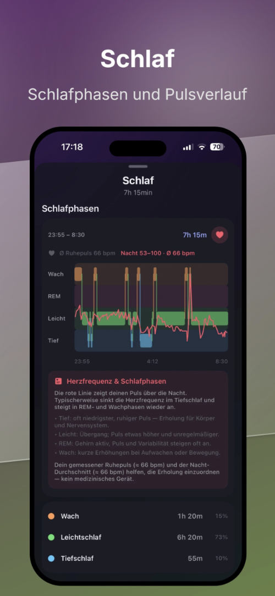
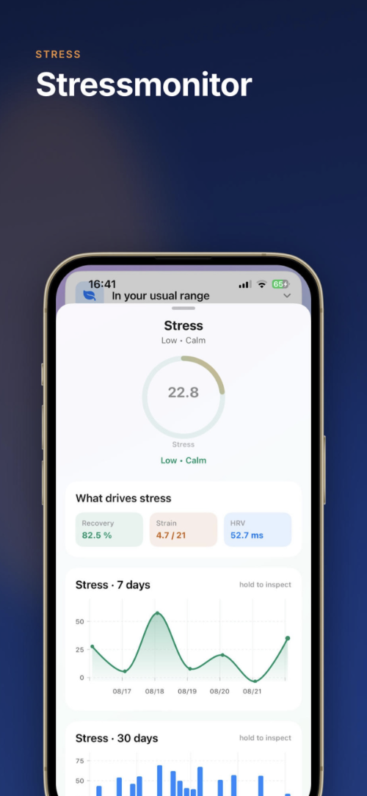
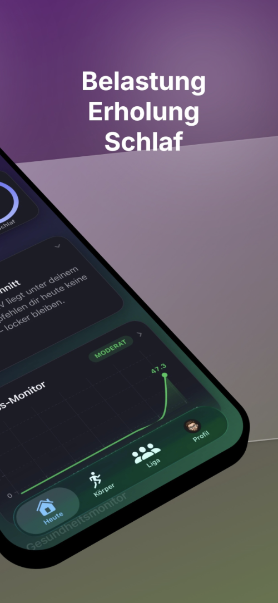
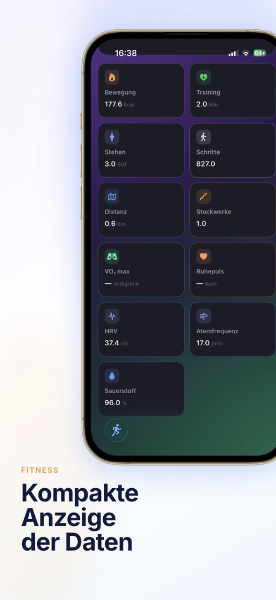
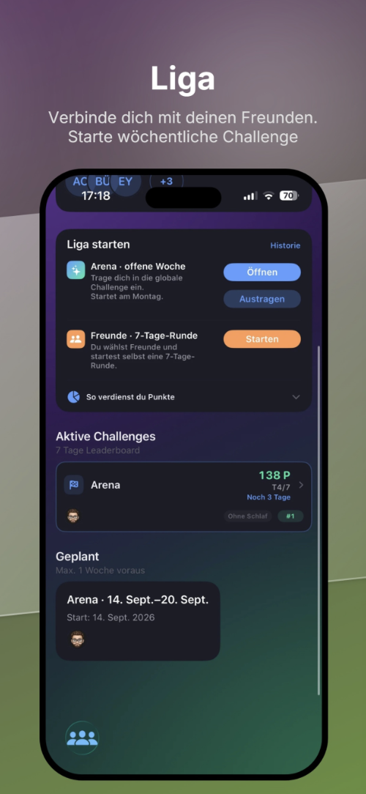
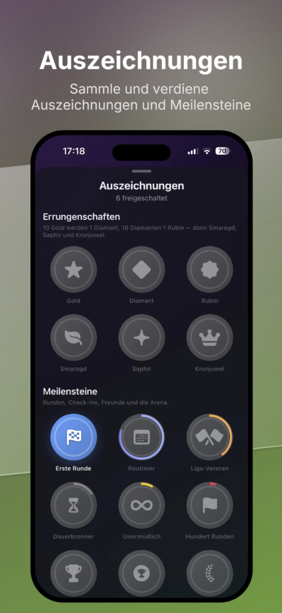

Tagebuch
Kalorien und Makros
Dein Ernährungstagebuch liegt nur auf deinem iPhone. Auf Wunsch schreibt HealthUp+ Nährwerte und Wasser nach Apple Health.
Für iPhone und Apple Watch
HealthUp+ macht aus deinen Apple-Health-Daten ein klares Bild für den Tag: Belastung, Erholung und Schlaf. Dazu Ernährung mit Barcode, Rezepten und optionaler KI-Foto-Schätzung, und eine Wochen-Liga mit Freunden.

Der Tag
Die Werte entstehen auf deinem iPhone aus den Daten, die du in Apple Health freigibst. Sie sind Schätzungen zur Orientierung, keine Diagnose. Wie wir rechnen, steht in der Methodik.


Körper und Fitness
Deine Werte aus Apple Health, klar dargestellt: Vitalwerte, Fitness und Körperwerte. Dein Fitnessalter ist eine statistische Schätzung zur Motivation, kein medizinischer Wert und kein Laborwert.


Ernährung
Tagebuch
Dein Ernährungstagebuch liegt nur auf deinem iPhone. Auf Wunsch schreibt HealthUp+ Nährwerte und Wasser nach Apple Health.
Suche und Barcode
Eigene Lebensmitteldatenbank aus öffentlichen Nährwerttabellen, dazu Barcode und Suche über Open Food Facts. Quellen
Optional
Mit deinem eigenen API-Schlüssel schätzt ein KI-Anbieter deiner Wahl die Nährwerte eines Fotos. So funktioniert es
Nährwerte stammen aus offenen Datenbanken und sind bei Gerichten meist geschätzt. Sie können von deinem Lebensmittel abweichen. Bei Produkten mit Barcode gelten die Angaben auf der Verpackung. Die Rezeptbilder sind mit KI erstellt und zeigen Serviervorschläge. Mehr dazu unter KI-Transparenz.
Liga
Gleiche Regeln für alle. Freundescode eingeben, eigene Runde starten oder jede Woche in der offenen Arena mitmachen. Andere in der Liga sehen deine Punkte als Wettkampf, nie deinen Puls, dein Gewicht oder deinen Schlaf. Was genau öffentlich lesbar ist, steht im Datenschutz. Die Regeln findest du unter Liga und Community-Regeln.


Datenschutz
Keine eigenen Server. Deine Gesundheitswerte werden auf deinem iPhone berechnet.
Keine Analysedienste Dritter, kein Verkauf von Daten. Deine Gesundheit ist dein intimstes Gut und unverkäuflich.
Welche Dienste die App nutzt (Apple iCloud, GitHub, Open Food Facts, optional dein KI-Anbieter), steht in der Datenschutzerklärung.
Wofür HealthUp+ da ist. HealthUp+ hilft gesunden Erwachsenen ab 16 Jahren, Training, Erholung, Schlaf und Ernährung im Alltag einzuordnen. Die App zeigt Schätzungen aus deinen Daten in Apple Health und deinen eigenen Einträgen. HealthUp+ ist kein Medizinprodukt. Die App erkennt, überwacht, behandelt oder verhütet keine Krankheiten und ersetzt keine ärztliche Beratung. Wenn du dich krank fühlst oder Beschwerden hast, wende dich an eine Ärztin oder einen Arzt. Im Notfall ruf 112.